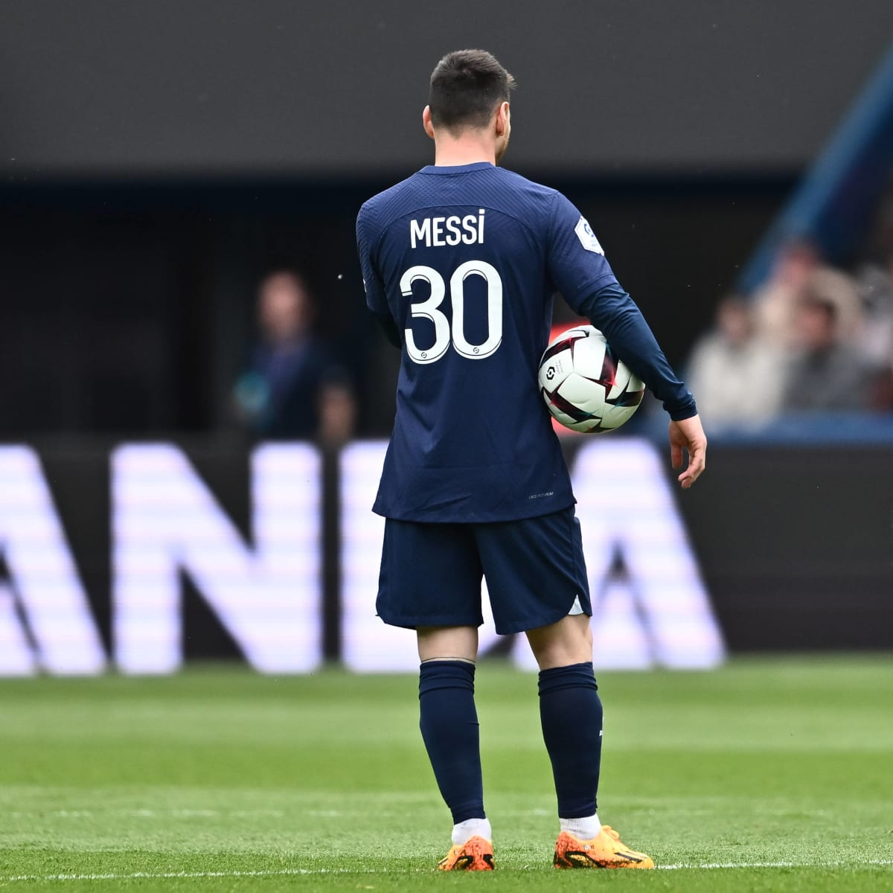

Bienvenido a Lionel Messi Web
¿quien es messi?
(Lionel Andrés Messi; Rosario, Santa Fe, 1987) Futbolista argentino. Poseedor de una habilidad técnica excepcional, una endiablada velocidad y una inventiva inagotable, desde que llegó de la mano de sus padres al F.C. Barcelona, con 13 años de edad, realizó una carrera vertiginosa por las diferentes categorías hasta el primer equipo, en el que debutó con apenas 16 años en un partido amistoso ante el Oporto. En 2004, con 17 años, Leo Messi jugó su primer encuentro oficial de la Liga española. Con 18 años le llegó su consagración internacional: formó parte de la selección argentina, campeona en el Mundial Juvenil Sub-20 de Holanda, disputado en 2005.Pero su verdadera eclosión se produjo con la llegada de Pep Guardiola al banquillo azulgrana: durante las cuatro temporadas en que el técnico dirigió el equipo (2008-2012), sus estadísticas goleadoras alcanzaron niveles estratosféricos, contribuyendo de forma decisiva a que el Barça viviese la mejor etapa de su historia al hacerse con 14 títulos de los 18 posibles. Considerado unánimemente el mejor futbolista del momento, su talento individual se ha visto reconocido en cinco ocasiones con el Balón de Oro (2009, 2010, 2011, 2012 y 2015). 